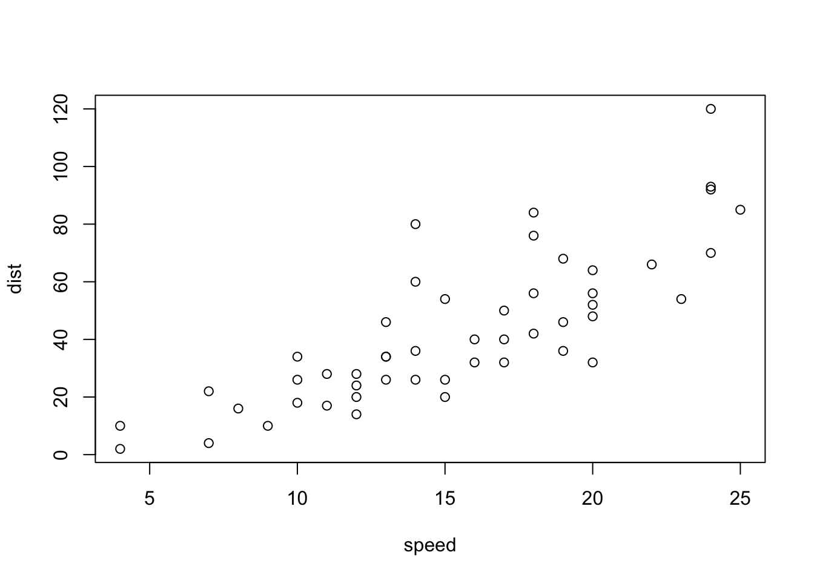

Meeting 3 Check Valves
Meeting 3 notes…
- This is a list item
- Item 2
- nested items need four spaces to indent
- sublist item 2
- sublist item 3
- Item 3
- Item 4
- Item 5

You can include regular graphics also:
Figure 3.1: A figure caption.
Figure 3.2: A ball of yarn.
Figure 3.3: An interactive Shiny application.